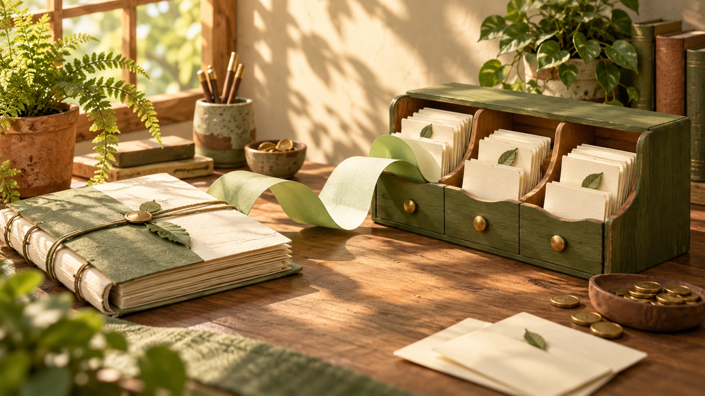
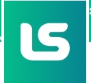
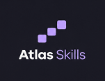
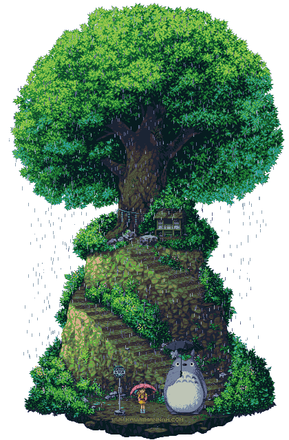

CAPA CRIADA PARA O PROJETOGestão financeira e triagem de solicitações: dados, prioridades e processos em um só sistema.
Código no GitHub ↗Bem-vinda(o) ao meu pequeno universo.
Toque no meu nome para fazer as letras florescerem.
Engenharia de Software ↔ Backend & Dados
Estudante na UNIUBE.
Backend, dados e IA generativa.
Entender o problema vem antes do código.
Escolha um caminho. O conteúdo está sempre a um clique.
↗ UM PASSEIO PELO PORTFÓLIO
Cada lugar guarda uma parte da minha história. Explore na sua ordem.
{ } UM EXPERIMENTO DO FLUXO INTELIGENTE
Combine impacto e urgência, acompanhe a resposta e descubra por que a prioridade muda. Uma regra real do meu projeto, em um pequeno laboratório para explorar.
Conhecer a regra no código0 de 3 descobertas
Uma melhoria pequena, sem pressa. Encontre a combinação de impacto baixo e urgência baixa.
prioridade = matriz[impacto][urgência]Impacto médio + urgência média → prioridade média.
Encontre o impacto na linha e a urgência na coluna. O encontro dos dois define a letra. A célula destacada acompanha sua escolha.
| Impacto ↓ Urgência → | Baixa | Média | Alta | Crítica |
|---|---|---|---|---|
| Baixo | D | D | C | B |
| Médio | C | C | B | B |
| Alto | C | C | B | A |
| Crítico | B | B | A | A |
A crítica · B alta · C média · D baixa
Este experimento executa uma matriz de regras definida no projeto.
UM RESPIRO NO CAMINHO
01 UM POUCO SOBRE MIM
Sou a Elza, estudante de Engenharia de Software na UNIUBE. Gosto de entender como tudo se conecta: a lógica por trás de uma decisão, o caminho dos dados e as necessidades de quem vai usar um sistema.
Meu caminho até a tecnologia também passa pela rotina de um laboratório. Como Jovem Aprendiz no Hermes Pardini, do Grupo Fleury, trabalhei com registros, documentos, planilhas e atendimento. Aprendi que uma informação bem organizada facilita o trabalho e faz diferença para quem depende dela. Hoje, levo esse cuidado para os meus projetos.
Tenho direcionado meus estudos para backend, com Java, Python e SQL, e sigo explorando arquitetura, dados e IA generativa. Procuro começar pelas perguntas, organizar os requisitos e testar o que estou construindo. Quando algo não funciona, volto ao problema e ajusto o caminho.
Busco minha primeira oportunidade em tecnologia para contribuir com uma equipe e continuar aprendendo na prática. Quero construir soluções úteis, com atenção às pessoas e senso crítico ao usar IA.
Qual problema precisa ser resolvido? Quem usa a solução? O que ainda precisa ser confirmado?
No Fluxo Inteligente, impacto e urgência ajudam a representar uma prioridade de forma explícita.
Conferir o comportamento, ouvir o retorno e ajustar o caminho faz parte de construir.
02 FEITO COM CURIOSIDADE
Vire as capas. Explore as imagens,
as ideias e o código por trás delas.

CAPA CRIADA PARA O PROJETOGestão financeira e triagem de solicitações: dados, prioridades e processos em um só sistema.
Código no GitHub ↗
Lacrei Saúdeinterfaces que acolhem.
Uma interface responsiva e acessível, com componentes reutilizáveis e atenção à experiência de quem usa.
Código no GitHub ↗Um sistema de votação em Python para praticar validação de entradas, contagem e percentuais.
Código no GitHub ↗Projeto de Power BI em construção, com foco na apresentação visual dos dados.
Demonstração interativa em preparação.

IDENTIDADE DO PROJETOPerfis, competências e trilhas de aprendizagem com IA, em um projeto de equipe para hackathon.
Repositório da equipe ↗03 NA MINHA MOCHILA
Conhecimentos que aplico e aprofundo nos estudos e projetos. Escolha uma área para vê-la na prática.
Python · Java · Spring Boot · FastAPI · APIs REST
SQL · PostgreSQL · Power BI · Excel · Microsoft Azure
React · TypeScript · Git · GitHub
No horizonte: arquitetura de software e IA generativa.
04 O CAMINHO ATÉ AQUI
De processos e registros ao desenvolvimento de software. Cada experiência amplia meu jeito de olhar para um problema.

TRÊS CAPÍTULOS, UM CAMINHO
Toque em uma etapa para descobrir mais.
FORMAÇÃO · 2026 — 2029 (PREVISTO)
Graduação em andamento, construindo uma base em lógica, algoritmos, requisitos e desenvolvimento de software.
Explorar minha formação ↗JUL — OUT 2026
Formação voltada ao desenvolvimento profissional, complementando a graduação em Engenharia de Software.
Abrir o herbário de aprendizados ↗NOV 2024 — MAR 2026
Acompanhamento de informações de exames, atualização de cadastros e organização de documentos. Uso de Excel e recursos de VBA, apoio ao estoque e orientação a pacientes.
Explorar uma regra na prática ↗APRENDIZADOS QUE SE SOMAM
Um herbário de aprendizados. Abra as fichas e descubra os caminhos que se encontram no meu trabalho.
Graduação em andamento. A conclusão em dezembro de 2029 é uma previsão informada no perfil.
Em andamentoFormação listada no perfil compartilhado, complementando a graduação e a preparação para o trabalho.
Período informado no perfilFormação registrada no LinkedIn como Bootcamp Certificate em desenvolvimento web e arquitetura cliente-servidor.
Curso listado no perfilO título está na seção de certificações da exportação. Emissor, data e URL da credencial não aparecem nesse documento.
Emissor e data a confirmarO título está na seção de certificações da exportação. Emissor, data e URL da credencial não aparecem nesse documento.
Emissor e data a confirmarCurso de extensão listado no perfil compartilhado como Arduino Fundamentals.
Curso listado no perfilFormação escolar registrada no perfil compartilhado, de janeiro de 2018 a dezembro de 2025.
Formação listada no perfilFonte: exportação do LinkedIn compartilhada em 15/10/2026. O perfil online pode ter atualizações. Ver perfil ↗
05 VAMOS CONVERSAR?
Estou em busca da minha primeira oportunidade em tecnologia.
Tem um projeto, uma oportunidade ou uma boa troca de ideias?